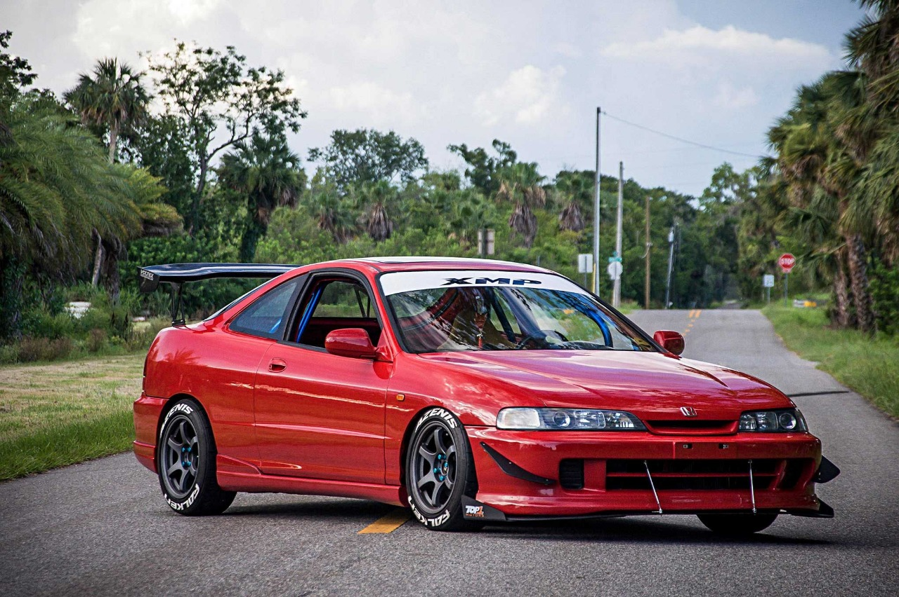
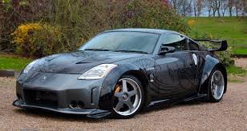
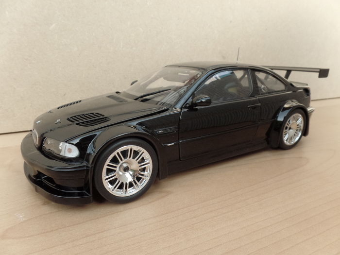
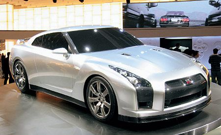
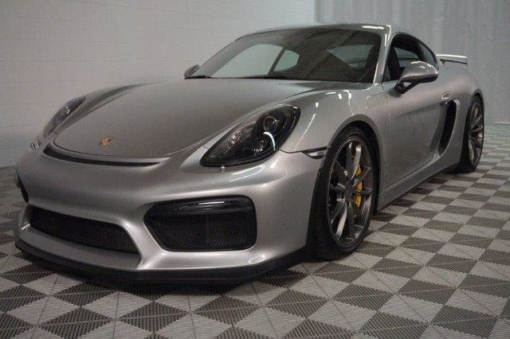

History
Acura Integra

O Integra é um coupé compacto da Honda, fabricado entre 1985 e 2006 mundialmente; porém que continua sendo fabricado exclusivamente para o Japão.Tornou-se mais conhecido na sua geração DC2 (1995-2001), este esportivo recebeu o lendário motor B-Series da Honda, no caso o B18C1 (no modelo GSR USDM) e o B18C6 (no modelo Type-R JDM - Japanese Domestic Market). Estes geravam 200 cavalos-vapor, obtendo assim uma otência específica de 110 cv/l, valor este perfeitamente excepcional. Os dois são dotados do sistema de comando variável da Honda, o VTEC. Além de bom desempenho em rectas, o Integra ficou conhecido pelo excelente comportamento em curva, motivo pelo qual em pistas e circuitos fechados anda a par de modelos muito mais potentes como o Subaru Impreza STi, o Lancer Evo IX e o próprio Civic EP3, Type-R produzido até 2005.
Nissan 350Z

O 350Z (conhecido no Japão como Fairlady Z33), foi um carro esportivo fabricado pela Nissan, produzido entre 2001 e 2009. O 350Z é o quinto da geração da linhagem Nissan Z, inicialmente introduzido em 1969 (como um modelo ano 1970) como o Datsun 240Z. O 350Z entrou em produção no final de 2001. O 350z entre 2003 e 2007 foi fabricado com o Motor VQ35DE de 280 V6 de 3.5L e entre 2008 e 2009 com o Famoso VQ35HR de V6 com os 312 cv, este atingindo os 100km/h em apena 6,54 segundos. O carro tem modelos da subdivisão NISMO (Nissan Motorsport) sendo que esses tem modificações pensadas em um desempenho esportivo como motor mais potente, rodas NISMO, aerofólio e alguns outros detalhes no interior e exterior do carro.).
BMW M3 GTR (E46)

Em realidade, o BMW M3 GTR (E46) foi o primeiro V8 do modelo, sendo equipado com o P60B40 4.0 de 449 cavalos e câmbiomanual de seis marchas, desenvolvido pela divisão M. O diferencial de deslizamento limitado também era exclusivo. Este bólido das pistas custava 250 mil euros e a BMW o vendeu para clientes comuns, mas foram poucos. Foi desenvolvida uma versão de rua do BMW M3 GTR, mas com potência reduzida para 387 cavalos e 39,6 kgfm. Foram feitos apenas seis exemplares junto com os carros de competição, sendo que cada um alcançava nada menos que 295 km/h. Da meia dúzia, metade foi destruída e o restante ficou no acervo da BMW. Já o BMW M3 CS foi uma série exclusiva do Reino Unido.
Aston Martin DB9

O Aston Martin DB9 é um grand tourer britânico apresentado pela primeira vez pela Aston Martin no Salão do Automóvel de Frankfurt de 2003 . Disponível tanto como coupé como conversível, conhecido como Volante, o DB9 foi o sucessor do DB7 . Foi o primeiro modelo construído na instalação de Gaydon da Aston Martin . O DB9 foi projetado por Marek Reichman e Henrik Fisker e é feito em grande parte de alumínio. O chassi é a plataforma de VH enquanto o motor é o V12 de 5.9-litro do Aston Martin V12 Vanquish . A versão 2013 do ano modelo viu muitas melhorias no design, no motor e na experiência geral de direção. Ele agora tinha 510 cv (380 kW; 517 cv) e 620 Nm (457 lb.ft) de torque do motor e vinha com freios de cerâmica de carbono como padrão. Tem uma velocidade máxima de 183 mph (295 km / h) e um tempo de 0 a 60 mph (97 km / h) de 4,5 segundos.
Nissan GT-R

O Nissan GT-R é um modelo de automóvel superesportivo produzido pela Nissan, foi anunciado em 2001 com o objetivo de dar sequencia a marca GT-R (que surgiu na década de 1960 que fez sucesso com o Skyline), em 6 de dezembro de 2007 foi oficialmente lançado no Japão, em 2008 chegou aos Estados Unidos, Canadá e Portugal, no resto do mundo apenas em 2009. O modelo 2007 possui um motor 3.8 V6 Biturbo com potência de 485Cv (362 kW) e 59.95Kgfm (588,0N.m.) de torque, acoplado a uma transmissão automatizada de 6 marchas com dupla embreagem e sistema de tração AWD ATTESA E-TS®, esse conjunto fornece desempenho capaz de levar os 1740Kg de 0–100 km/h em 2.8s e tem velocidade máxima de 310 km/h.
Porsche Cayman

Lançado pela primeira vez em 2006 ano modelo , o Cayman é um coupé derivado de segunda e terceira geração do Porsche Boxster roadster. O designer da primeira geração do Porsche Cayman foi Pinky Lai. Uma grande porcentagem dos Boxsters foi montada na Finlândia para a Porsche pela Valmet Automotive (os demais foram montados em Zuffenhausen, Stuttgart, Alemanha). Por outro lado, todas as Cayman foram fabricadas na Finlândia pela Valmet Automotive. O vice-presidente da Porsche, Holger P. Haerter, declarou que o contrato com a Valmet Automotive terminará em 2012, e a produção da Cayman seria terceirizada para a Magna Steyr em Graz, na Áustria. [3]No entanto, como a Volkswagen assumiu o controle da Porsche AG, a produção de Caymans e Boxsters começou em 2012 na antiga fábrica de Karmann em Osnabrück , Alemanha, que agora é propriedade da Volkswagen e também usada para a produção do conversível Golf (Mk6) 2012.